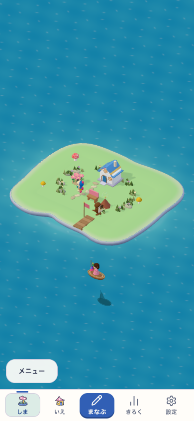
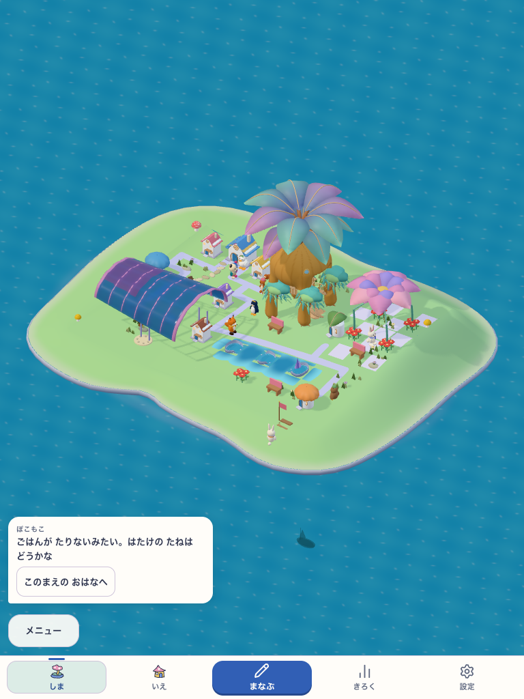
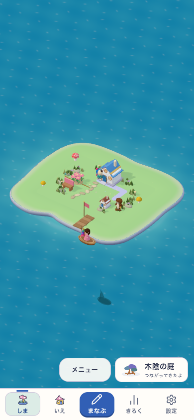
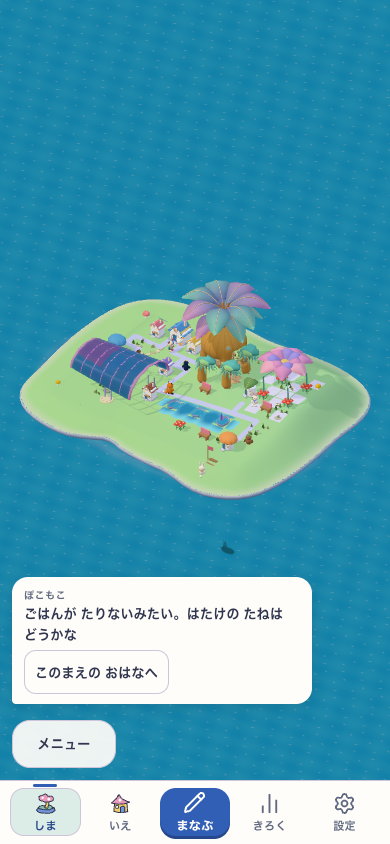
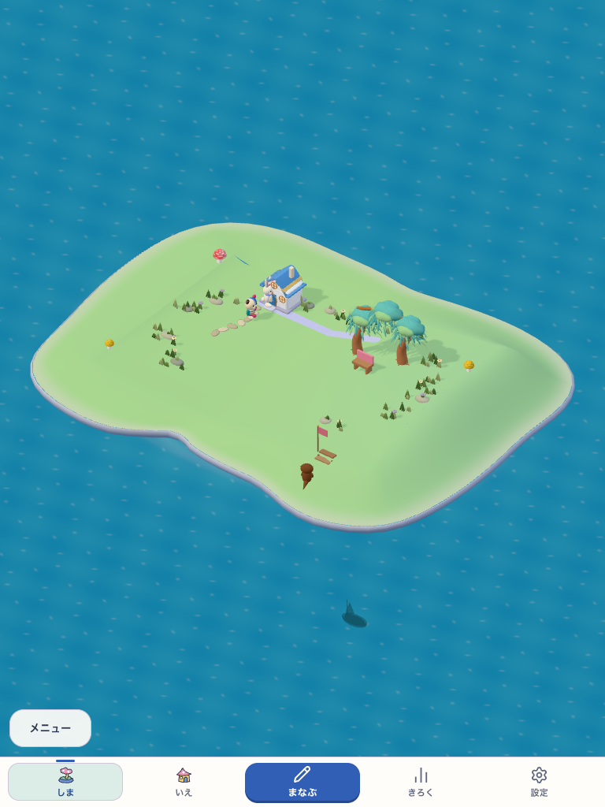
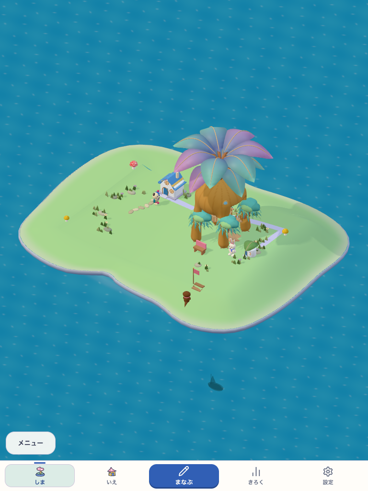
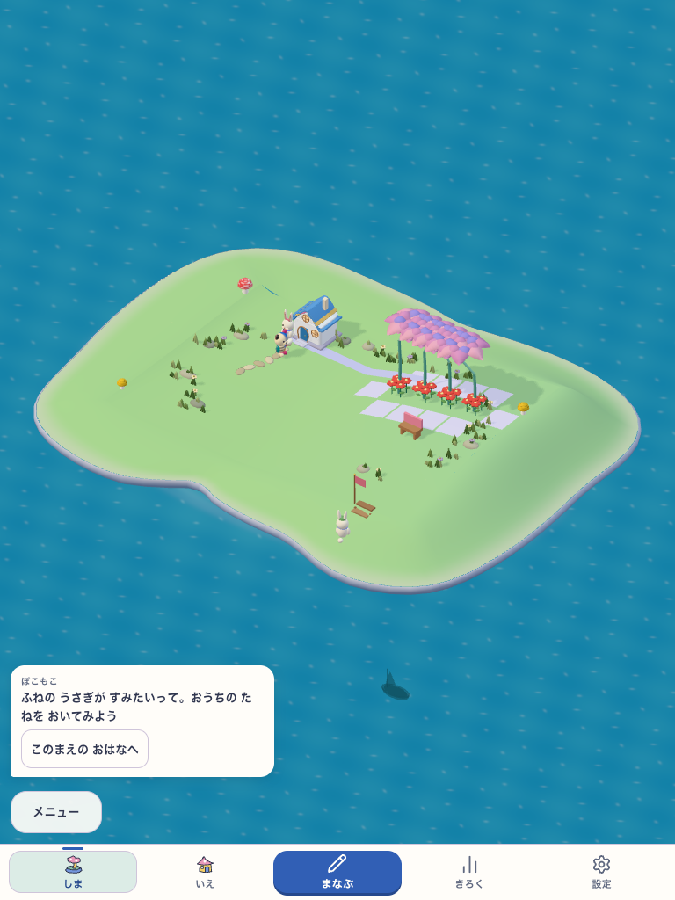
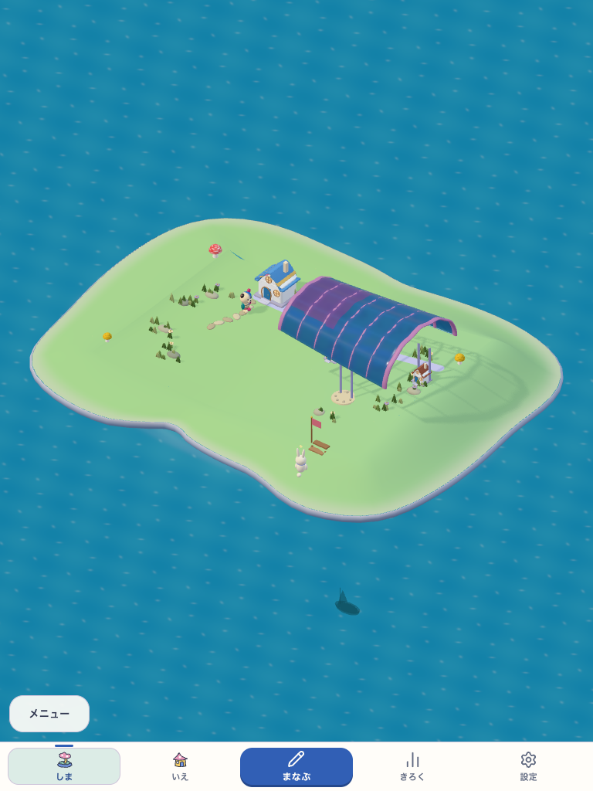

明るく、丸い一軒から。
原本の曲がった屋根と厚い壁。相棒と住人は同じ本物の3Dを使います。
POKOMOKO · NATIVE 05 · 2026.10.11
丸い家。色のある大きな葉。花の屋根と、光を透かす貝。採用した全島3Dの形と素材を、実際の配置と成熟に対応させました。
新しい本人島と前の本人島は、同じ所有・配置の成熟診断です。完成目標は採用済みの美術模型。深い入り江と高い段泉を含む全地形には、まだ差があります。

島の部分を拡大して表示しています。画像を開くと元の全画面を見られます。
初期の家と若い接続は、通常の学習・取得を操作した実画面。成熟全景は、形を比較するための明示した診断配置です。

原本の曲がった屋根と厚い壁。相棒と住人は同じ本物の3Dを使います。

同じ苗を離す、つなぎ直す。所有と育成の履歴を保ち、若い木は若い姿で描きます。

扇葉と琥珀の幹、巨大な花弁、青紫の殻。白さや粒子の量へ幻想性を置き換えません。
下の4枚は実画面の一部を拡大した表示です。画像を開くと、同じ固定版の全画面を見られます。

垂れ葉と異なる樹種。同じ所有した木から、木陰のまとまりが育ちます。

実際の床を歩く枝の道と、幹の空洞。地上の入口と頭上の余白を残します。

花弁の重なりと、通り抜ける空間。配置の違いが列・塊・中庭の姿へつながります。

色を透かす薄い屋根。水辺の家と実床から成立した、共有の居場所です。
原本の部品を使うだけでは、全島の魅力は揃いません。残る差は、土地と水の形、地区の密度、空間のつながりです。
完成模型の15軒と人物は、本人の所有や人口に加えません。小物を増やすことを、地形の改善の代わりにしません。
原本の家・葉・花弁・殻を転写。全島の作者評価は41/60、HOLD。入り江・段泉・courtの幹・密度に差が残ります。
実床と頭上の余白を検査。独立した子どもの観察はN=0で、理解・楽しさを推定しません。
基本検査4,984件、通常取得3旅程、成熟40組、破損時の復帰、実SW更新4ケースが通りました。実機は未評価です。
転写と到達の記録 · 原本と12部品の対応 · 所有・床・表示の契約
描画候補 native05-owned-runtime-v1。DEVで表示し、固定buildは VITE_NATIVE_GROWING_ART=true。固定版はA6（native05-owned-runtime-v1-a6）。通常productionの既定はfalse。大きな全島GLBを通常の本人島へ配布しません。
起動から実取得・学習への帰還 · 通常取得と成熟配置の全画面 · 版・候補・実利用・保存 · 美術・独立観察・実装の判定 · 固定版との入力対応